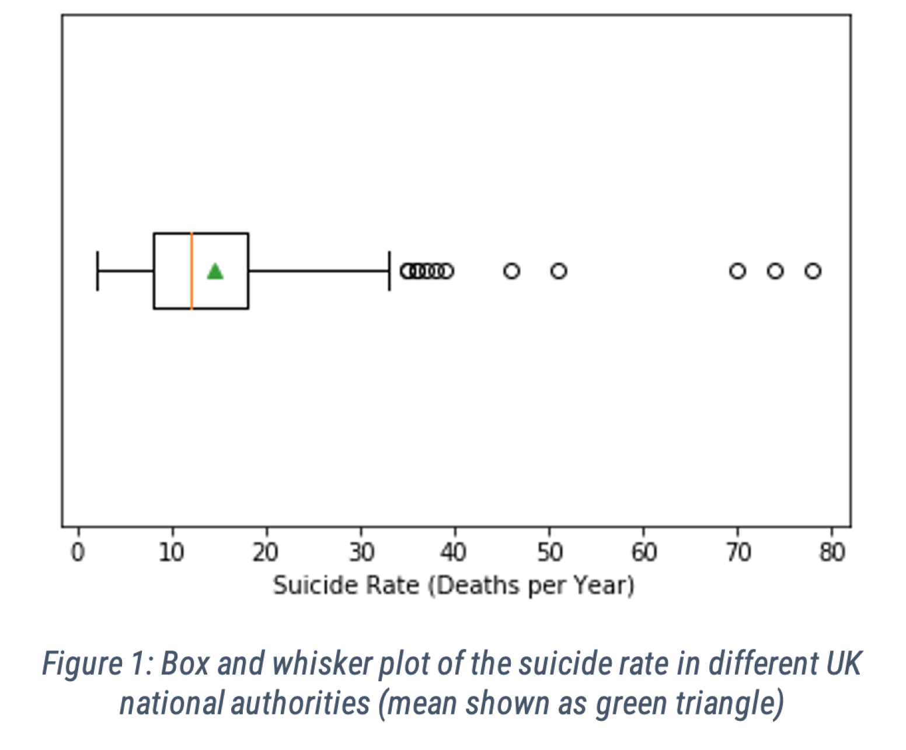
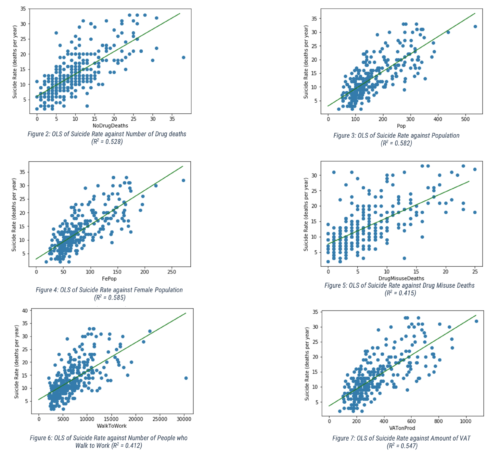
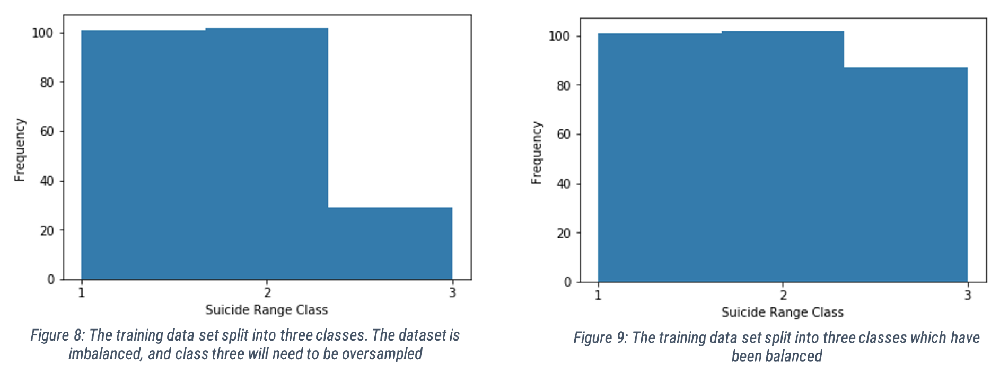
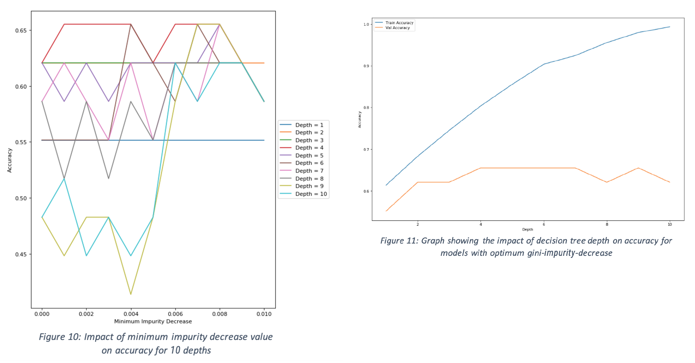
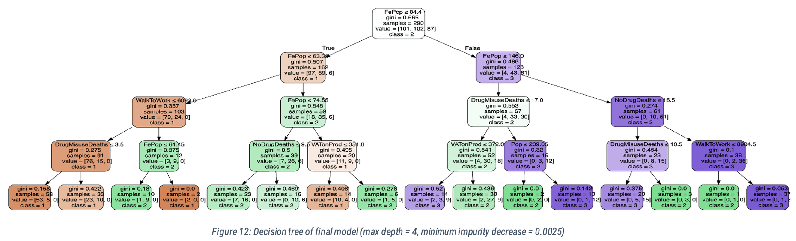

Louis Cutner
Overall, 5691 suicides were registered in England and Wales in 2019, the highest since 2000. The
suicide rate of young people aged
10 to 24 had increased by 94% since 2012 [1]. To help remedy this, it is important to understand which
socio-economic
demographics directly impact the number of suicides.
Various demographic data were collected from the Office for National Statistics (ONS) [2], for different local
authorities of the UK,
in 2016. Examples of some of the data collected were the number of drug deaths, total fertility rate, old age
dependency ratio,
distance travelled to work, house price pear area, GDP per capita, etc. In total there were 28 different
predictors to investigate.
These data were collected for each of the UK’s local authorities, giving 302 data points for each category. Data
for each local
authority’s suicide rate were collected for the year of 2016 (total deaths in that year). A full list of the
attributes used can be found in
appendix 5.1.
The report is split into two parts, an explanatory analysis, and a predictive analysis. The explanatory analysis
looks at which factors
have a statistically significant impact on suicide rates. The second part of the report attempts to create a
predictive model to predict
the suicide rate of a local authority, based on the other socio-economic data. The model is tested on a test
data set containing a
randomly selected subset of the data from 2016.
PREPARING THE DATA
Firstly, all the data for 2016 had to be compiled together into one large data set.
Data from some local authorities had to be removed as there were some
missing data points and null values. Once this was done, a box and whisker
plot was created for the suicide rates and outliers were identified that were
outside the range Q3 + 1.5 x IQR and Q1 - 1.5 x IQR. These outliers were then
removed from the data (code in appendix 5.3.1).

EXPLANATORY ANALYSIS
In the explanatory analysis, we are looking to find what differences in local authorities’ demographics
correlate to differing suicide
rates. Linear regression (ordinary least squares regression, or OLS) models are used, with the suicide rate as
the continuous
dependent variable.
Based on our own intuition and anecdotal evidence, we hypothesised that there would
be a correlation between the number of drug
deaths, and number of suicides. We also predicted that there would be a connection between the total female
population and suicide
rate, since suicide is over three times more common amongst men [1].
28 OLS models were produced, and the
six that showed the strongest correlation between the predictors and suicide rates are
shown below, as well as the RSS and R2 values. The closer the R2 value is to 1, the stronger the correlation is.
The highest R2 value
was from female population, with an R2 value of 0.585 (code in appendix 5.3.3).

PREDICTIVE ANALYSIS - EXPLORATORY ANALYSIS AND PREPARING THE DATA
To help reduce the number of suicides, local authorities should investigate what demographic factors are likely
to increase their
suicide rate. It would be useful for the government to have a model to predict what areas will have the highest
suicide rate based on
their socio-economic data, to aid local authorities in making changes to reduce the number of suicides and
getting help to those
who need it.
Firstly, the data was split into three different sections. The first section is a training
data set made up from 60% of the original
dataset. This will be used to build and refine the predictive model. The second section is the validation set,
made up from 20% of the
original data set. While training the data set, the validation set is used to check the accuracy of the model,
to ensure that the model
is not over-fitting. Finally, there is the testing data set, also made up from 20% of the original data set.
This is only used once the
model is finished, to test that it is accurate in making predictions on an unknown data set (code in appendix
5.3.2).
The suicide rate data were split into three classes: 0 to 10, 11 to 21 and 22 to 33 suicides. The
aim of the model is to be able to
predict within which class a national authority will fall into. Figure 8 shows these three classes, and the
frequency of each class.
It is clear from Figure 8 that the data set is imbalanced, and there are much fewer occurrences of class 3 (22
to 33 suicides). To
remedy this, oversampling is used to balance the data set (code in appendix 5.3.4).
The balanced data set
can be seen in figure 9. There is an approximately equal number of occurrences in each group, and there are
three groups, so for the model to be effective, it will need to beat an accuracy of 33% (which can be obtained
by randomly selecting
a class for a local authority).

PREDICTIVE ANALYSIS - CREATING THE MODEL
The model would need to take in continuous data to make a multiclass prediction, so a decision tree will be
used. The following
method was used to select the hyper parameters for the decision tree:
1. First the model was trained using the training data set
2. Different values for the parameters of minimum gini impurity decrease and depth were tested on for the model
to see which gave
the most accurate results on both the training and validation data sets (i.e. best of both)
(code in appendix 5.3.4)
We first picked the depth as 4, as this is when the accuracy of the validation
set predictions peaks, at a value of approximately 0.65.
It is also when the training predictions and validation predictions are closest to one another before the
evaluation accuracy starts to
decrease again (see Figure 11).
Once we chose the depth, we looked at Figure 10 and found that the
optimum impurity decrease for a depth of 4 was between
0.001 and 0.004, so we picked 0.0025.

PREDICTIVE ANALYSIS - ANALYSIS OF MODEL
The results show that the model is effective for making predictions in the training data set with an accuracy of
80.3%, and in the
validation data set to an accuracy of 65.5%, which is considerably higher than the minimum accuracy required
(which was 33.3%
which could be achieved by guessing at random).
The first split is based on female population, if it is
above a certain threshold number. The model continues to split based on all six
of the key features that we hypothesised to be relevant in 2.2. It is worth noting that five of the fifteen
splits were based on female
population, which makes sense, because in part 2.2 it was found that this attribute had the strongest
correlation with suicide rates
of all the predictors we looked at.
The results have ginis in the range from 0 to 0.52. The gini with the
best value (of zero) was in areas where the female population is
less than 61450, and more than 6093 people walk to work. These indicators would suggest that the area would be
class 1
(between 0 and 10 suicides). Another example of a low gini would be in areas where female population is greater
than 146000,
there are less than 16.5 drug related deaths, but more than 10.5 drug misuse related deaths. This would have
predicted class 2
(between 11 and 21 suicides) with a gini of 0 as well.
When the final model was applied to the test data
set, an accuracy of 58.6% was achieved, which is not too high, although still much
higher than the probability of randomly guessing the suicide rate correctly (33%).

Conclusion
This model highlights how difficult it is to accurately predict a person’s likelihood of committing suicide
purely based on
demographics of the area in which they live. There are far more factors that would need to be considered, some
completely
independent of the socio-economic environment.
The main predictor used was the female population, though
it is known that males are significantly (over three times) more likely to
commit suicide than women, so just by looking at how many men there are, it would be easy to assume that there
would be a higher
suicide rate. This is not particularly insightful or useful, because it is not something that can be changed or
used to reduce people’s
likelihood of committing suicide.
Furthermore, the model’s accuracy (though better than random chance),
is still quite low, and a lot more data and training would be
needed to make accurate predictions about suicide rates. For example, we were unable to find good data on
education in the UK’s
local authorities, which would likely have been a huge influencing factor, especially considering that a large
majority of suicides are
in young people aged between 10 and 24.